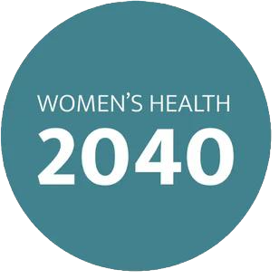

Julia Persson

Building AI-powered precision prevention for women navigating perimenopause and menopause. 20+ years leading digital transformation across finance and technology — now applying that to the largest underserved gap in healthcare.
Building Now
Scita Health
AI-powered clinical decision support tools helping women prevent chronic disease through a personalised, bio-adaptive approach. Focused on perimenopause and menopause — the critical but underserved window when disease risk rises significantly across cardiovascular, metabolic, and cognitive domains.

Nordic Charter for Women's Health 2040
Pan-Nordic coordination framework — open commons, not organisation. Started at the Danish Parliament with 136 participants from five countries. Launched in December 2025 at the Finnish Embassy in Copenhagen in dialogue with the Nordic Council of Ministers. Methodology published in The Lancet (January 2026). Implementation Playbook publishes 28 May 2026 at BLOX, Copenhagen — International Day of Action for Women's Health, with the Copenhagen Institute for Futures Studies.
Advisory Roles
Women's Health Horizons — EU Strategic Advisory Board, advancing global women's health across policy, healthcare, and investment.
myHealth@myHands — EU Digital Europe Programme, citizen-controlled health data via EUDI Wallet.
123cards — Board Director, strategic perspective across sectors.
Track Record
Connect
Education: MSc Business & Economics, Lund University · MSc Business Administration, Kyiv National Economic University
Certifications: HBS Disruptive Strategy · MIT Sloan · IMD Financial Leadership · AWS Cloud Practitioner
Languages: English · Swedish · Ukrainian · Russian (Fluent) · Danish (Conversational)
Publication: The Lancet — Nordic Charter for Women's Health 2040